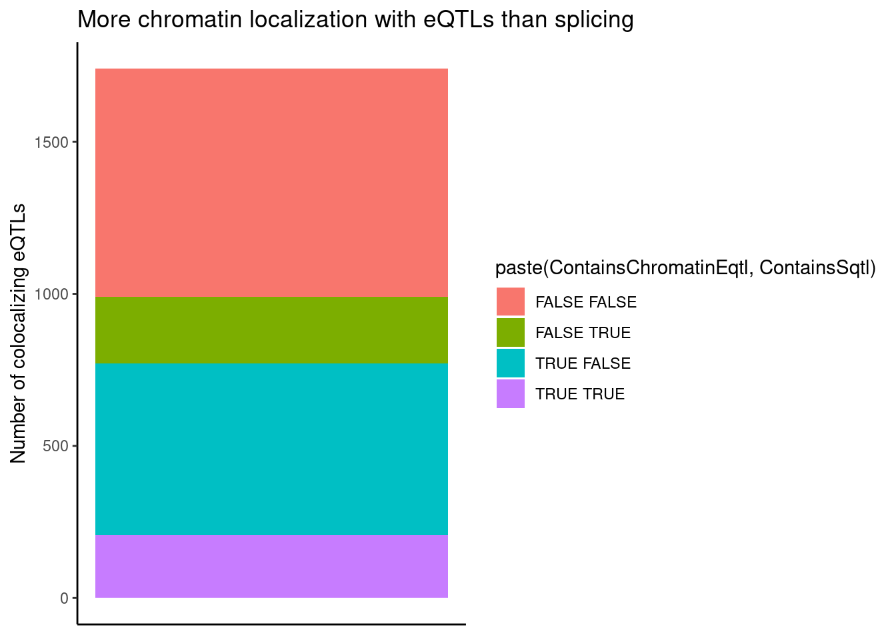
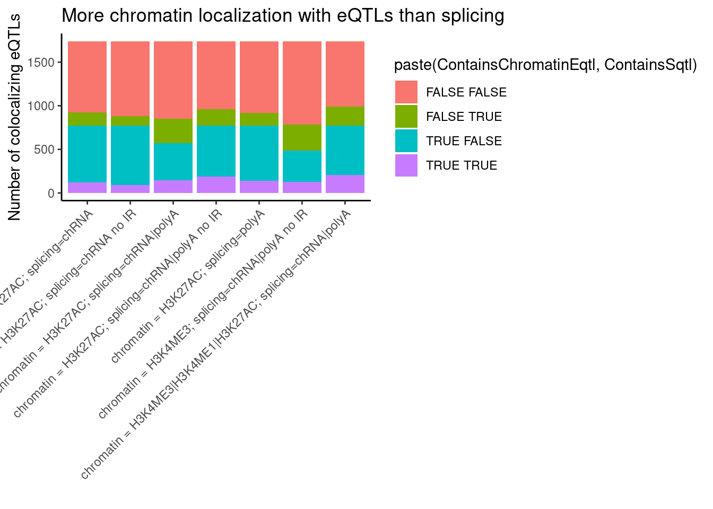
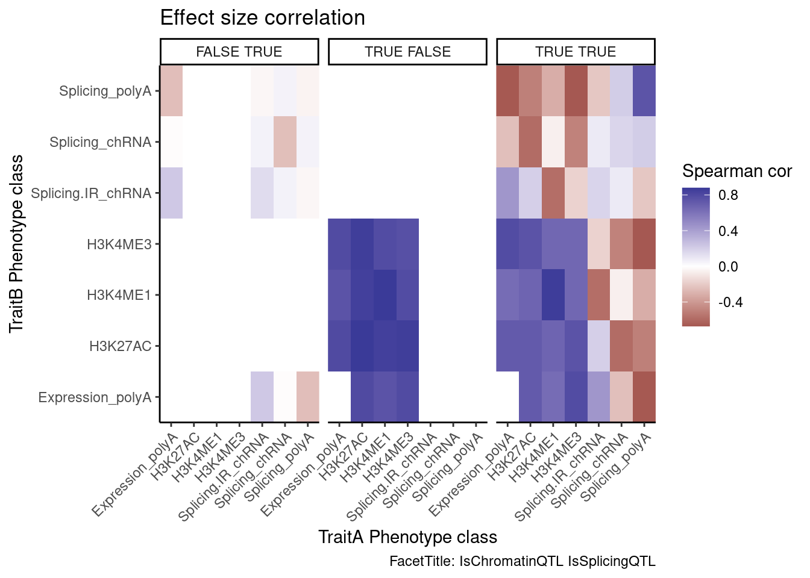
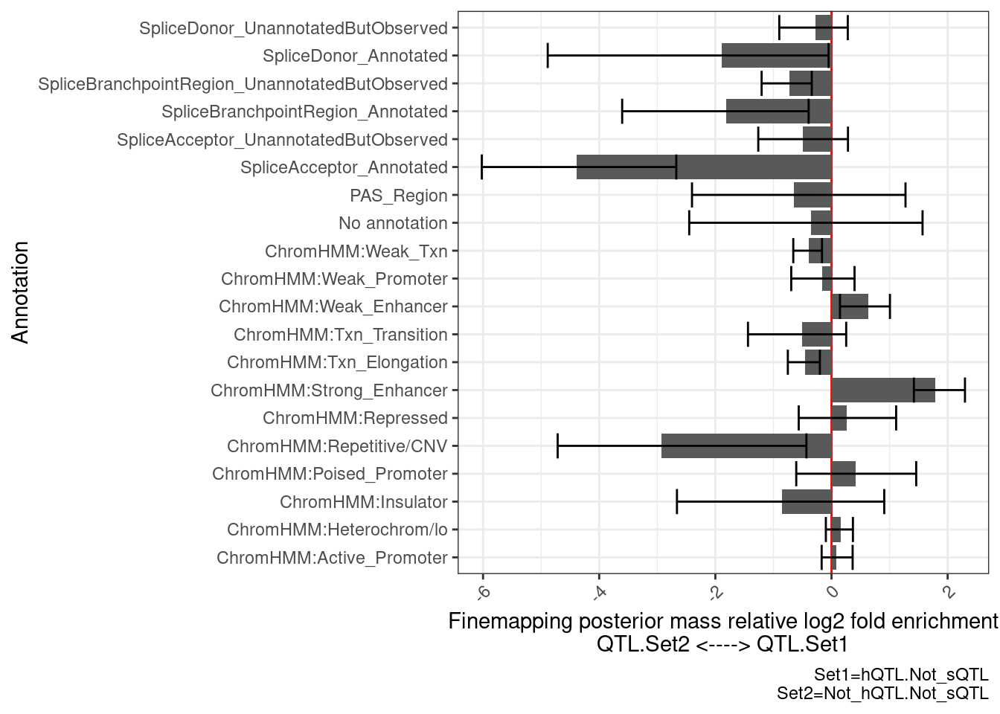
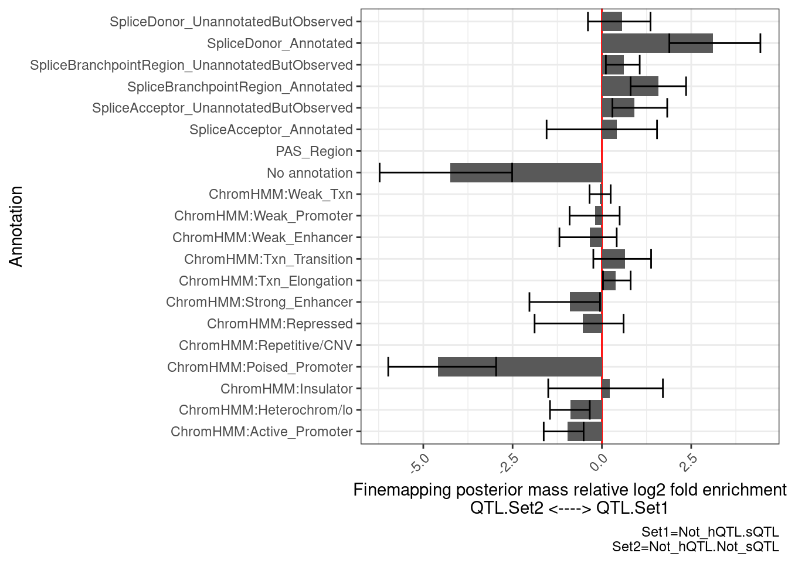
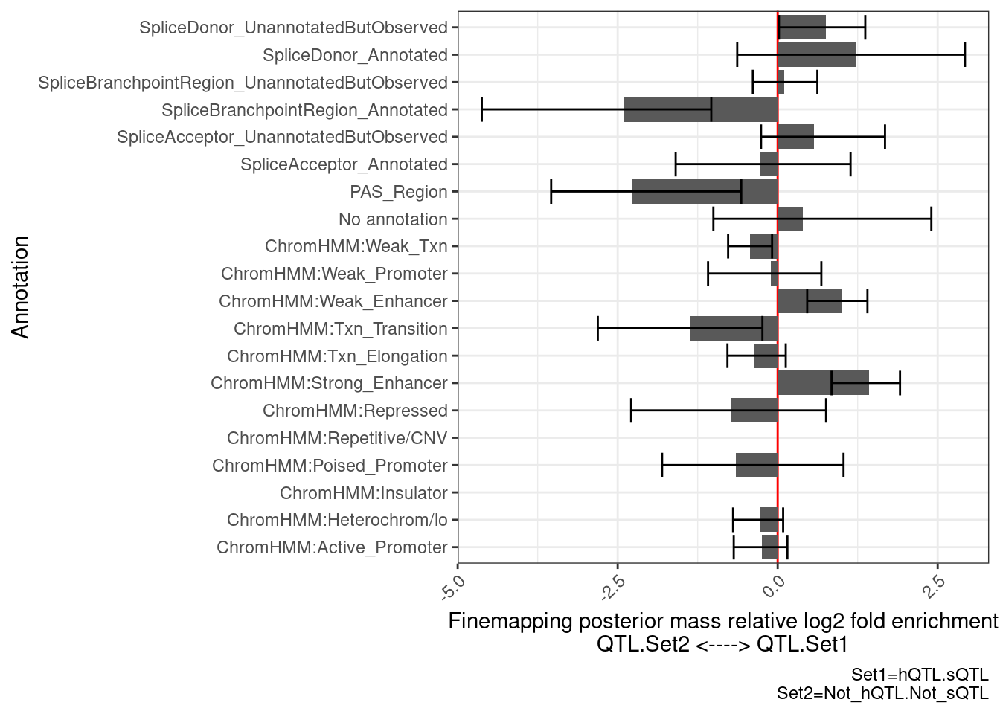
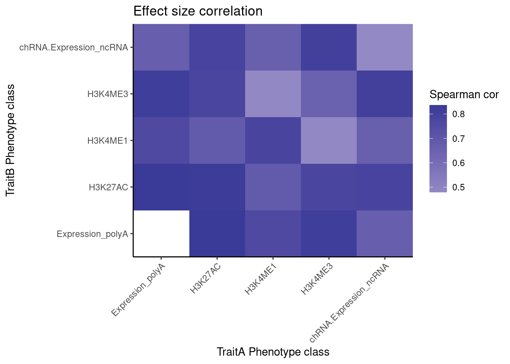
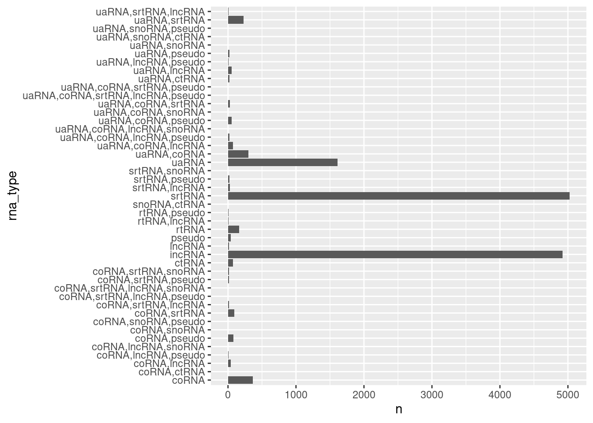
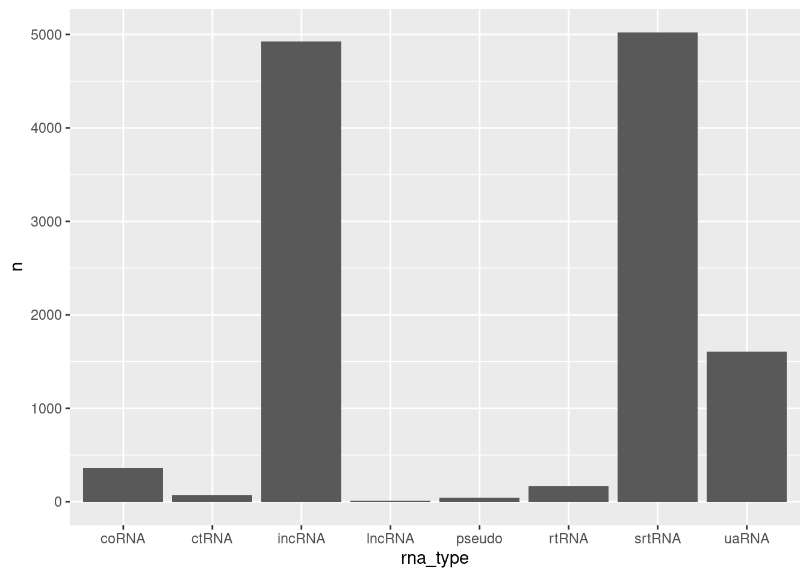
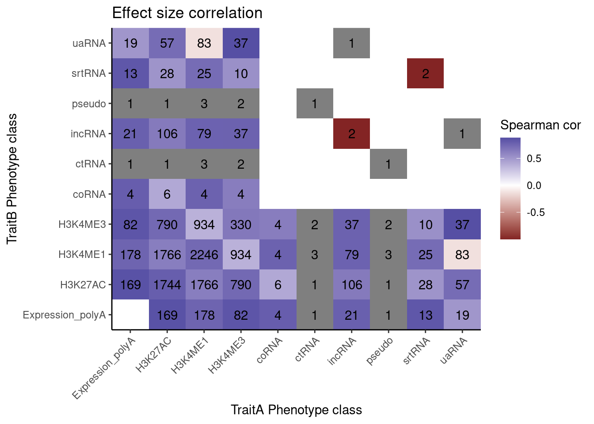

Last updated: 2022-09-22
Checks: 6 1
Knit directory: ChromatinSplicingQTLs/analysis/
This reproducible R Markdown analysis was created with workflowr (version 1.6.2). The Checks tab describes the reproducibility checks that were applied when the results were created. The Past versions tab lists the development history.
The R Markdown is untracked by Git. To know which version of the R Markdown file created these results, you’ll want to first commit it to the Git repo. If you’re still working on the analysis, you can ignore this warning. When you’re finished, you can run wflow_publish to commit the R Markdown file and build the HTML.
Great job! The global environment was empty. Objects defined in the global environment can affect the analysis in your R Markdown file in unknown ways. For reproduciblity it’s best to always run the code in an empty environment.
The command set.seed(20191126) was run prior to running the code in the R Markdown file. Setting a seed ensures that any results that rely on randomness, e.g. subsampling or permutations, are reproducible.
Great job! Recording the operating system, R version, and package versions is critical for reproducibility.
Nice! There were no cached chunks for this analysis, so you can be confident that you successfully produced the results during this run.
Great job! Using relative paths to the files within your workflowr project makes it easier to run your code on other machines.
Great! You are using Git for version control. Tracking code development and connecting the code version to the results is critical for reproducibility.
The results in this page were generated with repository version e9163e8. See the Past versions tab to see a history of the changes made to the R Markdown and HTML files.
Note that you need to be careful to ensure that all relevant files for the analysis have been committed to Git prior to generating the results (you can use wflow_publish or wflow_git_commit). workflowr only checks the R Markdown file, but you know if there are other scripts or data files that it depends on. Below is the status of the Git repository when the results were generated:
Ignored files:
Ignored: .DS_Store
Ignored: .Rhistory
Ignored: .Rproj.user/
Ignored: analysis/.Rhistory
Ignored: code/.DS_Store
Ignored: code/.RData
Ignored: code/._.DS_Store
Ignored: code/._README.md
Ignored: code/._report.html
Ignored: code/.ipynb_checkpoints/
Ignored: code/.snakemake/
Ignored: code/APA_Processing/
Ignored: code/Alignments/
Ignored: code/ChromHMM/
Ignored: code/ENCODE/
Ignored: code/ExpressionAnalysis/
Ignored: code/FastqFastp/
Ignored: code/FastqFastpSE/
Ignored: code/Genotypes/
Ignored: code/IntronSlopes/
Ignored: code/Misc/
Ignored: code/MiscCountTables/
Ignored: code/Multiqc/
Ignored: code/Multiqc_chRNA/
Ignored: code/NonCodingRNA_annotation/
Ignored: code/PeakCalling/
Ignored: code/Phenotypes/
Ignored: code/PlotGruberQTLs/
Ignored: code/PlotQTLs/
Ignored: code/ProCapAnalysis/
Ignored: code/QC/
Ignored: code/QTL_SNP_Enrichment/
Ignored: code/QTLs/
Ignored: code/ReferenceGenome/
Ignored: code/Rplots.pdf
Ignored: code/Session.vim
Ignored: code/SplicingAnalysis/
Ignored: code/TODO
Ignored: code/Tehranchi/
Ignored: code/bigwigs/
Ignored: code/bigwigs_FromNonWASPFilteredReads/
Ignored: code/config/.DS_Store
Ignored: code/config/._.DS_Store
Ignored: code/config/.ipynb_checkpoints/
Ignored: code/debug.ipynb
Ignored: code/debug_python.ipynb
Ignored: code/deepTools/
Ignored: code/featureCounts/
Ignored: code/gwas_summary_stats/
Ignored: code/hyprcoloc/
Ignored: code/igv_session.xml
Ignored: code/log
Ignored: code/logs/
Ignored: code/notebooks/.ipynb_checkpoints/
Ignored: code/rules/.ipynb_checkpoints/
Ignored: code/rules/OldRules/
Ignored: code/rules/notebooks/
Ignored: code/scratch/
Ignored: code/scripts/.ipynb_checkpoints/
Ignored: code/scripts/GTFtools_0.8.0/
Ignored: code/scripts/__pycache__/
Ignored: code/scripts/liftOverBedpe/liftOverBedpe.py
Ignored: code/snakemake.log
Ignored: code/snakemake.sbatch.log
Ignored: data/.DS_Store
Ignored: data/._.DS_Store
Ignored: data/._20220414203249_JASPAR2022_combined_matrices_25818_jaspar.txt
Ignored: data/GWAS_catalog_summary_stats_sources/._list_gwas_summary_statistics_6_Apr_2022-10.csv
Ignored: data/GWAS_catalog_summary_stats_sources/._list_gwas_summary_statistics_6_Apr_2022-11.csv
Ignored: data/GWAS_catalog_summary_stats_sources/._list_gwas_summary_statistics_6_Apr_2022-2.csv
Ignored: data/GWAS_catalog_summary_stats_sources/._list_gwas_summary_statistics_6_Apr_2022-3.csv
Ignored: data/GWAS_catalog_summary_stats_sources/._list_gwas_summary_statistics_6_Apr_2022-4.csv
Ignored: data/GWAS_catalog_summary_stats_sources/._list_gwas_summary_statistics_6_Apr_2022-5.csv
Ignored: data/GWAS_catalog_summary_stats_sources/._list_gwas_summary_statistics_6_Apr_2022-6.csv
Ignored: data/GWAS_catalog_summary_stats_sources/._list_gwas_summary_statistics_6_Apr_2022-7.csv
Ignored: data/GWAS_catalog_summary_stats_sources/._list_gwas_summary_statistics_6_Apr_2022-8.csv
Ignored: data/GWAS_catalog_summary_stats_sources/._list_gwas_summary_statistics_6_Apr_2022.csv
Untracked files:
Untracked: analysis/20220920_Explore_chRNA_sQTLs.Rmd
Untracked: code/snakemake_profiles/slurm/__pycache__/
Unstaged changes:
Modified: analysis/20220713_RPKM_v_TPM.Rmd
Deleted: code/envs/spliceq.yml
Modified: code/scripts/GenometracksByGenotype
Modified: code/scripts/Plot_QTLPermutationTestNumSig.R
Note that any generated files, e.g. HTML, png, CSS, etc., are not included in this status report because it is ok for generated content to have uncommitted changes.
There are no past versions. Publish this analysis with wflow_publish() to start tracking its development.
Carlos and I recently re-ran most of the QTL calling and colocalization pipelines, with some new phenotype tables, including his new de-novo called transcription units from our chRNA data. I expect this to improve some things. Let’s explore the data in many ways…
…From permutation pass, with cis-eqtl test windows centered around the test phenotype.
library(tidyverse)
library(data.table)
Files <- Sys.glob("../code/QTLs/QTLTools/*/PermutationPass.FDR_Added.txt.gz")
Files [1] "../code/QTLs/QTLTools/CTCF/PermutationPass.FDR_Added.txt.gz"
[2] "../code/QTLs/QTLTools/Expression.Splicing.Subset_YRI/PermutationPass.FDR_Added.txt.gz"
[3] "../code/QTLs/QTLTools/Expression.Splicing/PermutationPass.FDR_Added.txt.gz"
[4] "../code/QTLs/QTLTools/H3K27AC/PermutationPass.FDR_Added.txt.gz"
[5] "../code/QTLs/QTLTools/H3K36ME3/PermutationPass.FDR_Added.txt.gz"
[6] "../code/QTLs/QTLTools/H3K4ME1/PermutationPass.FDR_Added.txt.gz"
[7] "../code/QTLs/QTLTools/H3K4ME3/PermutationPass.FDR_Added.txt.gz"
[8] "../code/QTLs/QTLTools/MetabolicLabelled.30min.IER/PermutationPass.FDR_Added.txt.gz"
[9] "../code/QTLs/QTLTools/MetabolicLabelled.30min.IR/PermutationPass.FDR_Added.txt.gz"
[10] "../code/QTLs/QTLTools/MetabolicLabelled.30min.IRjunctions/PermutationPass.FDR_Added.txt.gz"
[11] "../code/QTLs/QTLTools/MetabolicLabelled.30min.Splicing/PermutationPass.FDR_Added.txt.gz"
[12] "../code/QTLs/QTLTools/MetabolicLabelled.30min/PermutationPass.FDR_Added.txt.gz"
[13] "../code/QTLs/QTLTools/MetabolicLabelled.60min.IER/PermutationPass.FDR_Added.txt.gz"
[14] "../code/QTLs/QTLTools/MetabolicLabelled.60min.IR/PermutationPass.FDR_Added.txt.gz"
[15] "../code/QTLs/QTLTools/MetabolicLabelled.60min.IRjunctions/PermutationPass.FDR_Added.txt.gz"
[16] "../code/QTLs/QTLTools/MetabolicLabelled.60min.Splicing/PermutationPass.FDR_Added.txt.gz"
[17] "../code/QTLs/QTLTools/MetabolicLabelled.60min/PermutationPass.FDR_Added.txt.gz"
[18] "../code/QTLs/QTLTools/ProCap/PermutationPass.FDR_Added.txt.gz"
[19] "../code/QTLs/QTLTools/chRNA.Expression.Splicing/PermutationPass.FDR_Added.txt.gz"
[20] "../code/QTLs/QTLTools/chRNA.Expression_cheRNA/PermutationPass.FDR_Added.txt.gz"
[21] "../code/QTLs/QTLTools/chRNA.Expression_eRNA/PermutationPass.FDR_Added.txt.gz"
[22] "../code/QTLs/QTLTools/chRNA.Expression_lncRNA/PermutationPass.FDR_Added.txt.gz"
[23] "../code/QTLs/QTLTools/chRNA.Expression_ncRNA/PermutationPass.FDR_Added.txt.gz"
[24] "../code/QTLs/QTLTools/chRNA.Expression_snoRNA/PermutationPass.FDR_Added.txt.gz"
[25] "../code/QTLs/QTLTools/chRNA.IER/PermutationPass.FDR_Added.txt.gz"
[26] "../code/QTLs/QTLTools/chRNA.IR/PermutationPass.FDR_Added.txt.gz"
[27] "../code/QTLs/QTLTools/chRNA.IRjunctions/PermutationPass.FDR_Added.txt.gz"
[28] "../code/QTLs/QTLTools/chRNA.Slopes/PermutationPass.FDR_Added.txt.gz"
[29] "../code/QTLs/QTLTools/chRNA.Splicing.Order/PermutationPass.FDR_Added.txt.gz"
[30] "../code/QTLs/QTLTools/chRNA.Splicing/PermutationPass.FDR_Added.txt.gz"
[31] "../code/QTLs/QTLTools/polyA.IER.Subset_YRI/PermutationPass.FDR_Added.txt.gz"
[32] "../code/QTLs/QTLTools/polyA.IER/PermutationPass.FDR_Added.txt.gz"
[33] "../code/QTLs/QTLTools/polyA.IR.Subset_YRI/PermutationPass.FDR_Added.txt.gz"
[34] "../code/QTLs/QTLTools/polyA.IR/PermutationPass.FDR_Added.txt.gz"
[35] "../code/QTLs/QTLTools/polyA.IRjunctions/PermutationPass.FDR_Added.txt.gz"
[36] "../code/QTLs/QTLTools/polyA.Splicing.Subset_YRI/PermutationPass.FDR_Added.txt.gz"
[37] "../code/QTLs/QTLTools/polyA.Splicing/PermutationPass.FDR_Added.txt.gz" Ok, actually, I think these files are out dated.
TODO: Make sure we have recently called these as snakemake target files, since Carlos updated these… I’m realizing there are lots and lots of things I just have to re-run from the snakemake before I can get up-to-date output files to do many QC types of analyses. So I’m going to to skip to only doing things with files that already exist as of today to get a sense of what results to expect once we finalize some analyses.
I think will mainly work with the colocalization output files here
PhenotypeAliases <- read_tsv("../data/Phenotypes_recode_for_Plotting.txt")
PC.ShortAliases <- PhenotypeAliases %>%
dplyr::select(PC, ShorterAlias) %>% deframe()
coloc.results <- read_tsv("../code/hyprcoloc/Results/ForColoc/MolColocStandard/results.txt.gz")
coloc.results.tidycolocalized <- read_tsv("../code/hyprcoloc/Results/ForColoc/MolColocStandard/tidy_results_OnlyColocalized.txt.gz") %>%
separate(phenotype_full, into=c("PC", "P"), sep=";")
# Get all the phenotype classes
coloc.results.tidycolocalized$PC %>% unique() [1] "polyA.Splicing" "MetabolicLabelled.30min"
[3] "MetabolicLabelled.60min" "H3K27AC"
[5] "H3K4ME3" "H3K4ME1"
[7] "chRNA.IER" "ProCap"
[9] "polyA.Splicing.Subset_YRI" "CTCF"
[11] "chRNA.Splicing.Order" "chRNA.Expression_ncRNA"
[13] "Expression.Splicing" "Expression.Splicing.Subset_YRI"
[15] "chRNA.Splicing" "MetabolicLabelled.30min.Splicing"
[17] "MetabolicLabelled.60min.Splicing" "chRNA.Expression.Splicing"
[19] "H3K36ME3" "polyA.IER"
[21] "MetabolicLabelled.30min.IER" "MetabolicLabelled.60min.IER"
[23] "polyA.IER.Subset_YRI" "chRNA.Slopes" #How many YRI poly A QTLs
coloc.results.tidycolocalized %>%
filter(PC=="Expression.Splicing.Subset_YRI")# A tibble: 1,741 × 11
snp beta beta_se p Locus PC P iteration ColocPr RegionalPr
<chr> <dbl> <dbl> <dbl> <chr> <chr> <chr> <dbl> <dbl> <dbl>
1 7:121… 0.561 0.119 9.18e- 6 ENSG… Expr… ENSG… 1 0.835 0.897
2 7:199… 0.553 0.106 1.13e- 6 ENSG… Expr… ENSG… 1 0.308 0.531
3 7:817… 1.69 0.143 8.35e-20 ENSG… Expr… ENSG… 1 0.896 0.923
4 2:201… 0.388 0.0812 7.01e- 6 ENSG… Expr… ENSG… 1 0.940 0.963
5 7:962… -0.335 0.0848 1.59e- 4 ENSG… Expr… ENSG… 3 0.634 0.697
6 17:72… 0.324 0.0620 1.15e- 6 ENSG… Expr… ENSG… 1 0.959 0.986
7 7:268… 0.554 0.110 2.71e- 6 ENSG… Expr… ENSG… 2 0.975 0.977
8 6:822… -0.185 0.0337 4.12e- 7 ENSG… Expr… ENSG… 1 0.621 0.787
9 11:33… 0.281 0.0475 6.45e- 8 ENSG… Expr… ENSG… 2 0.276 0.528
10 17:35… -0.526 0.108 4.95e- 6 ENSG… Expr… ENSG… 3 0.905 0.954
# … with 1,731 more rows, and 1 more variable: TopSNPFinemapPr <dbl>#Of which, how many also contain chromatin
coloc.results.tidycolocalized %>%
filter(PC=="Expression.Splicing.Subset_YRI")# A tibble: 1,741 × 11
snp beta beta_se p Locus PC P iteration ColocPr RegionalPr
<chr> <dbl> <dbl> <dbl> <chr> <chr> <chr> <dbl> <dbl> <dbl>
1 7:121… 0.561 0.119 9.18e- 6 ENSG… Expr… ENSG… 1 0.835 0.897
2 7:199… 0.553 0.106 1.13e- 6 ENSG… Expr… ENSG… 1 0.308 0.531
3 7:817… 1.69 0.143 8.35e-20 ENSG… Expr… ENSG… 1 0.896 0.923
4 2:201… 0.388 0.0812 7.01e- 6 ENSG… Expr… ENSG… 1 0.940 0.963
5 7:962… -0.335 0.0848 1.59e- 4 ENSG… Expr… ENSG… 3 0.634 0.697
6 17:72… 0.324 0.0620 1.15e- 6 ENSG… Expr… ENSG… 1 0.959 0.986
7 7:268… 0.554 0.110 2.71e- 6 ENSG… Expr… ENSG… 2 0.975 0.977
8 6:822… -0.185 0.0337 4.12e- 7 ENSG… Expr… ENSG… 1 0.621 0.787
9 11:33… 0.281 0.0475 6.45e- 8 ENSG… Expr… ENSG… 2 0.276 0.528
10 17:35… -0.526 0.108 4.95e- 6 ENSG… Expr… ENSG… 3 0.905 0.954
# … with 1,731 more rows, and 1 more variable: TopSNPFinemapPr <dbl>coloc.results.tidycolocalized %>%
group_by(Locus, snp) %>%
filter(any(PC=="Expression.Splicing.Subset_YRI")) %>%
summarise(
ContainsChromatinEqtl = any(PC %in% c("H3K27AC", "H3K4ME1", "H3K4ME3")),
ContainsSqtl = any(PC %in% c("polyA.Splicing.Subset_YRI", "chRNA.Splicing", "chRNA.IER"))
) %>%
ggplot(aes(x=1, fill=paste(ContainsChromatinEqtl, ContainsSqtl))) +
geom_bar() +
labs(title="More chromatin localization with eQTLs than splicing", y="Number of colocalizing eQTLs") +
theme_classic() +
theme(axis.title.x=element_blank(),
axis.text.x=element_blank(),
axis.ticks.x=element_blank())
Is this plot sensitive to whether I call just consider H3K27AC for chromatin, as opposed to H3K4ME3
bind_rows(
coloc.results.tidycolocalized %>%
group_by(Locus, snp) %>%
filter(any(PC=="Expression.Splicing.Subset_YRI")) %>%
summarise(
ContainsChromatinEqtl = any(PC %in% c("H3K27AC", "H3K4ME3", "H3K4ME1")),
ContainsSqtl = any(PC %in% c("polyA.Splicing.Subset_YRI", "chRNA.Splicing", "chRNA.IER"))
) %>%
mutate(x="chromatin = H3K4ME3|H3K4ME1|H3K27AC; splicing=chRNA|polyA"),
coloc.results.tidycolocalized %>%
group_by(Locus, snp) %>%
filter(any(PC=="Expression.Splicing.Subset_YRI")) %>%
summarise(
ContainsChromatinEqtl = any(PC %in% c("H3K27AC")),
ContainsSqtl = any(PC %in% c("polyA.Splicing.Subset_YRI", "chRNA.Splicing", "chRNA.IER"))
) %>%
mutate(x="chromatin = H3K27AC; splicing=chRNA|polyA"),
coloc.results.tidycolocalized %>%
group_by(Locus, snp) %>%
filter(any(PC=="Expression.Splicing.Subset_YRI")) %>%
summarise(
ContainsChromatinEqtl = any(PC %in% c("H3K4ME3")),
ContainsSqtl = any(PC %in% c("polyA.Splicing.Subset_YRI", "chRNA.Splicing", "chRNA.IER"))
) %>%
mutate(x="chromatin = H3K4ME3; splicing=chRNA|polyA no IR"),
coloc.results.tidycolocalized %>%
group_by(Locus, snp) %>%
filter(any(PC=="Expression.Splicing.Subset_YRI")) %>%
summarise(
ContainsChromatinEqtl = any(PC %in% c("H3K27AC", "H3K4ME3", "H3K4ME1")),
ContainsSqtl = any(PC %in% c("polyA.Splicing.Subset_YRI", "chRNA.Splicing"))
) %>%
mutate(x="chromatin = H3K27AC; splicing=chRNA|polyA no IR"),
coloc.results.tidycolocalized %>%
group_by(Locus, snp) %>%
filter(any(PC=="Expression.Splicing.Subset_YRI")) %>%
summarise(
ContainsChromatinEqtl = any(PC %in% c("H3K27AC", "H3K4ME3", "H3K4ME1")),
ContainsSqtl = any(PC %in% c("polyA.Splicing.Subset_YRI"))
) %>%
mutate(x="chromatin = H3K27AC; splicing=polyA"),
coloc.results.tidycolocalized %>%
group_by(Locus, snp) %>%
filter(any(PC=="Expression.Splicing.Subset_YRI")) %>%
summarise(
ContainsChromatinEqtl = any(PC %in% c("H3K27AC", "H3K4ME3", "H3K4ME1")),
ContainsSqtl = any(PC %in% c("chRNA.Splicing", "chRNA.IER"))
) %>%
mutate(x="chromatin = H3K27AC; splicing=chRNA"),
coloc.results.tidycolocalized %>%
group_by(Locus, snp) %>%
filter(any(PC=="Expression.Splicing.Subset_YRI")) %>%
summarise(
ContainsChromatinEqtl = any(PC %in% c("H3K27AC", "H3K4ME3", "H3K4ME1")),
ContainsSqtl = any(PC %in% c("chRNA.Splicing"))
) %>%
mutate(x="chromatin = H3K27AC; splicing=chRNA no IR")
) %>%
ggplot(aes(x=x, fill=paste(ContainsChromatinEqtl, ContainsSqtl))) +
geom_bar() +
labs(title="More chromatin localization with eQTLs than splicing", y="Number of colocalizing eQTLs", x="") +
theme_classic() +
theme(axis.text.x = element_text(angle = 45, vjust = 1, hjust=1))
I am curious about these QTLs that colocalize both chromatinQTL and sQTL effects. I will have to look at enrichment of SNP annotations under finemapping results (which I will look at later in this notebook I think) to get some sense of if they are mostly driven by splicing effects or by chromatin effects.
Next, let’s look at the direction of effects in each of these categories. For example, I expect (and have shown previously) that direction of chromatin QTL effects and eQTL effects are very concordant in colocalizing QTLs (eg Spearman correlation coef >0.9). Are intron retention effects generally discordant in these genes with an intron retention QTL colocalizing with eQTL? Biologically I expect intron retention to generally down regulate. But then I suspect some intron retention QTL effects are somehow picking up on positive transcription effects. So I’m not exactly sure what to expect…
coloc.results.tidycolocalized %>%
group_by(Locus, snp) %>%
filter(any(PC=="Expression.Splicing.Subset_YRI")) %>%
ungroup() %>%
filter(PC %in% c("Expression.Splicing.Subset_YRI","H3K27AC", "H3K4ME1", "H3K4ME3", "polyA.Splicing.Subset_YRI", "chRNA.Splicing", "chRNA.IER")) %>%
left_join(., ., by=c("Locus", "snp")) %>%
filter(!((P.x == P.y) & (PC.x == PC.y))) %>%
group_by(Locus, snp) %>%
mutate(
ContainsChromatinEqtl = any(PC.x %in% c("H3K27AC", "H3K4ME1", "H3K4ME3")),
ContainsSqtl = any(PC.x %in% c("polyA.Splicing.Subset_YRI", "chRNA.Splicing", "chRNA.IER"))
) %>%
ungroup() %>%
mutate(Contains.eQTL_Contains.sQTL = paste(ContainsChromatinEqtl, ContainsSqtl)) %>%
group_by(Contains.eQTL_Contains.sQTL, PC.x, PC.y) %>%
summarise(cor = cor(beta.x, beta.y, method="spearman")) %>%
mutate(PC.x = recode(PC.x, !!!PC.ShortAliases)) %>%
mutate(PC.y = recode(PC.y, !!!PC.ShortAliases)) %>%
ggplot(aes(x=PC.x, y=PC.y, fill=cor)) +
geom_raster() +
scale_fill_gradient2() +
facet_wrap(~Contains.eQTL_Contains.sQTL) +
scale_x_discrete(expand=c(0,0)) +
scale_y_discrete(expand=c(0,0)) +
theme_classic() +
theme(axis.text.x = element_text(angle = 45, vjust = 1, hjust=1)) +
labs(x="TraitA Phenotype class", y="TraitB Phenotype class", fill="Spearman cor", title="Effect size correlation",
caption = "FacetTitle: IsChromatinQTL IsSplicingQTL")
Hmm, it seems that intron retention might just be picking up eQTL signals, since it is positively correlated with eQTL effect size. And I don’t know how to explain that sQTLs are generally anti-correlated with eQTL effects in polyA (I would’ve expected no correlation).
And thankfully at least the effect directions of the chRNA sQTLs are positively correlated with the polyA sQTLs. These are all to be expected.
Next I want to plot a lot of these examples, as sashimi plots and coverage plots grouped by genotype of the top SNP, to get some intuitions on this. More specifically, is PSI larger in chRNA for the effects of opposite direction sQTL/eQTL effects (the presumed NMD targets)?
# AllFeats <- read_tsv("../code/QC/AllQTLPhenotypes.PermutationTest.bed.gz", col_names=c("Chrom", "start", "stop", "name", "score", "strand", "thickStart","thickStop", "Color")) %>%
# separate(name, into=c("PC", "P", "topSNP.QTLTools", "Pval", "FDR"), convert=T, sep=";")
AllFeats <- Sys.glob("../code/QTLs/QTLTools/*/OnlyFirstReps.sorted.qqnorm.bed.gz") %>%
setNames(str_replace(., "../code/QTLs/QTLTools/(.+?)/OnlyFirstReps.sorted.qqnorm.bed.gz", "\\1")) %>%
lapply(fread, sep='\t', select=1:6) %>%
bind_rows(.id="PC")
sample_n_of <- function(data, size, ...) {
dots <- quos(...)
group_ids <- data %>%
group_by(!!! dots) %>%
group_indices()
sampled_groups <- sample(unique(group_ids), size)
data %>%
filter(group_ids %in% sampled_groups)
}
ColocsToPlot.dat <- coloc.results.tidycolocalized %>%
filter(PC %in% c("Expression.Splicing.Subset_YRI","H3K27AC", "H3K4ME1", "H3K4ME3", "polyA.Splicing.Subset_YRI", "chRNA.Splicing", "chRNA.IER")) %>%
group_by(Locus, snp) %>%
filter(any(PC=="Expression.Splicing.Subset_YRI")) %>%
mutate(
ContainsChromatinEqtl = if_else(any(PC %in% c("H3K27AC", "H3K4ME1", "H3K4ME3")), "hQTL", "Not_hQTL"),
ContainsSqtl = if_else(any(PC %in% c("polyA.Splicing.Subset_YRI", "chRNA.Splicing", "chRNA.IER")), "sQTL", "Not_sQTL")
) %>%
ungroup() %>%
mutate(Group = paste(ContainsChromatinEqtl, ContainsSqtl, sep=".")) %>%
inner_join(AllFeats, by=c("PC", "P"="pid"))
set.seed(0)
ColocsToPlot.Subset <- ColocsToPlot.dat %>%
distinct(Locus, snp, Group, iteration) %>%
group_by(Group) %>%
sample_n(100) %>%
ungroup()Write bash script and other necessary stuff to execute my helper script for plotting
#Create folder to house files and images
dir.create("../code/scratch/20220921_PlotColocs")
# Write bed files containing all colocalized features that will be plotted
ColocsToPlot.dat %>%
inner_join(ColocsToPlot.Subset) %>%
mutate(PC = recode(PC, !!!PC.ShortAliases)) %>%
mutate(name=paste(PC, P, "beta=",signif(beta, 2)),
dummyScore = 0) %>%
dplyr::select(`#Chr`, start, end, name, dummyScore, strand) %>%
write_tsv("../code/scratch/20220921_PlotColocs/.ColocFeats.bed")
# Write pygenometracks ini file for the above bed file
fileConn<-file("../code/scratch/20220921_PlotColocs/.ColocFeats.ini")
writeLines(c("[feats]",
"type = bed",
"file = scratch/20220921_PlotColocs/.ColocFeats.bed",
"fontsize = 3",
"gene_rows = 10",
"height=5"
), con=fileConn)
close(fileConn)
# Write a "groups" file for my custom script to determine which tracks to plot, and how to plot them
read_tsv("../code/scratch/bwList.Groups2.tsv") %>%
filter(Group_label %in% c("chRNA", "polyA.RNA", "MetabolicLabelled.30min", "MetabolicLabelled.60min","H3K27AC", "H3K4ME3", "H3K4ME1", "H3K36ME3")) %>%
write_tsv("../code/scratch/20220921_PlotColocs/.groups.tsv")
# Write a bash script that calls my custom script and pygenometracks to plot stuff
ColocsToPlot.dat %>%
inner_join(ColocsToPlot.Subset) %>%
rename(chrom="#Chr") %>%
group_by(Locus, snp, chrom, Group, iteration) %>%
summarise(
min = min(start)-10,
max= max(end)+10) %>%
ungroup() %>%
mutate(SnpPos = str_replace(snp, "^(.+?):(.+?):.+?:.+?$", "chr\\1:\\2")) %>%
mutate(chrom.num = str_replace(chrom, "chr(.+?)$", "\\1")) %>%
mutate(cmd = str_glue("python scripts/GenometracksByGenotype/AggregateBigwigsForPlotting.py --GroupSettingsFile scratch/20220921_PlotColocs/.groups.tsv --BigwigList scratch/bwList.tsv --SnpPos {SnpPos} --Normalization WholeGenome --Region {chrom}:{min}-{max} --BigwigListType KeyFile --OutputPrefix scratch/20220921_PlotColocs/. --VCF Genotypes/1KG_GRCh38/{chrom.num}.vcf.gz -vv --TracksTemplate scripts/GenometracksByGenotype/tracks_templates/GeneralPurposeColoredByGenotype.ini --Bed12GenesToIni scripts/GenometracksByGenotype/PremadeTracks/gencode.v26.FromGTEx.genes.bed12.gz --FilterJuncsByBed scratch/20220921_PlotColocs/.ColocFeats.bed\npyGenomeTracks --tracks <(cat scratch/20220921_PlotColocs/.tracks.ini scratch/20220921_PlotColocs/.ColocFeats.ini) --out scratch/20220921_PlotColocs/{Group}.{Locus}.{iteration}.pdf --region {chrom}:{min}-{max} --title {Group}_{Locus}_{snp} --trackLabelFraction 0.15\n\n")) %>%
dplyr::select(cmd) %>%
write.table("../code/scratch/20220921_PlotColocs/MakePlots.sh", quote=F, row.names = F, col.names = F)and execute the bash script to make a bunch of plots
cd /project2/yangili1/bjf79/ChromatinSplicingQTLs/code
bash scratch/20220921_PlotColocs/MakePlots.shI’ve browsed perhaps 50 so far… some things i’ve noticed:
Next, let’s compare these groups of eQTLs (those that coloc with sQTL only, with hQTL only, or with both), to “unexplained eQTLs” (in this case, ones that colocalize with something, but not sQTL or hQTL), in terms of their finemap SNP enrichment over annotations (eg ChromHMM states, splice sites, etc)…
dat <- fread("../code/QTL_SNP_Enrichment/FinemapIntersections/MolColocStandard.bed.gz", col.names=c("SNP_chrom", "SNP_start", "SNP_end", "SNP", "PosteriorPr", "Annotation_chrom", "Annotation_start", "Annotation_stop", "Annotation", "Overlap")) %>%
separate(SNP, into=c("SNP", "HyprcolocCluster", "GeneLocus"), sep="_")
GeneLocus_Cluster_QTLSets <- ColocsToPlot.dat %>%
distinct(Locus, iteration, Group) %>%
unite(Locus.iteration, Locus, iteration) %>%
rename(ClusterGroup=Group) %>%
split(.$ClusterGroup)
#Define the function
PlotDifferentialEnrichmentBetweenQTLSets <- function(dat, GeneLocus_Cluster_QTLSet1, GeneLocus_Cluster_QTLSet2, seed=0, iterations=100){
#GeneLocus_Cluster_QTLSet1 and GeneLocus_Cluster_QTLSet2 are dataframes with mandatory columns called Locus.iteration (with values of Locus_iteration), and a ClusterGroup column to name the two sets (ie value like "SplicingClusters" for GeneLocus_Cluster_QTLSet1 and "HistoneClusters" for GeneLocus_Cluster_QTLSet2)
output <- list()
results <- list()
for (i in 1:iterations){
results[[i]] <-
bind_rows(
sample_frac(GeneLocus_Cluster_QTLSet1, replace=T),
sample_frac(GeneLocus_Cluster_QTLSet2, replace=T),
.id="QTL.Set") %>%
left_join(
dat %>%
mutate(Locus.iteration = paste(GeneLocus, HyprcolocCluster, sep="_")),
by = "Locus.iteration"
) %>%
mutate(Annotation = str_replace_all(Annotation, "_0$", "_UnannotatedButObserved")) %>%
mutate(Annotation = str_replace_all(Annotation, "_1$", "_Annotated")) %>%
mutate(Annotation = str_replace_all(Annotation, "^\\d+?_", "ChromHMM:")) %>%
filter(!is.na(Annotation)) %>%
mutate(Annotation = if_else(Annotation==".", "No annotation", Annotation)) %>%
group_by(Annotation, ClusterGroup, QTL.Set) %>%
summarise(Sum = sum(PosteriorPr)) %>%
group_by(ClusterGroup, QTL.Set) %>%
mutate(FractionAnnotatedPosteriorInGroup = Sum/sum(Sum, na.rm=T)) %>%
ungroup() %>%
# select(-ClusterGroup) %>%
pivot_wider(names_from = "QTL.Set", values_from = c("FractionAnnotatedPosteriorInGroup", "Sum"), id_cols="Annotation") %>%
mutate(Enrichment = FractionAnnotatedPosteriorInGroup_1/FractionAnnotatedPosteriorInGroup_2) %>%
mutate(i=i)
}
output[["data"]] <- bind_rows(results)
output[["plot"]] <- output[["data"]] %>%
group_by(Annotation) %>%
summarise(mean = exp(mean(log(Enrichment), na.rm=T)),
Percentile10 = quantile(Enrichment, probs = 0.05, na.rm=T),
Percentile90 = quantile(Enrichment, probs = 0.95, na.rm=T)) %>%
ggplot(aes(x=Annotation, y=log2(mean))) +
geom_hline(yintercept = 0, color='red') +
geom_col() +
geom_errorbar(aes(ymin=log2(Percentile10), ymax=log2(Percentile90))) +
theme_bw() +
# scale_y_continuous(trans='log2') +
theme(axis.text.x = element_text(angle = 45, vjust = 1, hjust=1)) +
coord_flip() +
labs(x = "Annotation", y="Finemapping posterior mass relative log2 fold enrichment\nQTL.Set2 <----> QTL.Set1",
caption = "Bootsrapped 90% confidence interval")
return(output)
}Ok now that I have the plotting function set up, let’s compare the eQTLs with hQTL but not sQTL, to those without sQTL or hQTL…
PlotDifferentialEnrichmentBetweenQTLSets(dat, GeneLocus_Cluster_QTLSets[["hQTL.Not_sQTL"]], GeneLocus_Cluster_QTLSets[["Not_hQTL.Not_sQTL"]])$plot +
labs(caption="Set1=hQTL.Not_sQTL\nSet2=Not_hQTL.Not_sQTL")
there is enrichment in ChromHMM enhancer regions, and de-enrichment in splice sites, as expected.
…And now check those eQTLs with sQTLs but not hQTLs, to those without hQTLs or sQTLs
PlotDifferentialEnrichmentBetweenQTLSets(dat, GeneLocus_Cluster_QTLSets[["Not_hQTL.sQTL"]], GeneLocus_Cluster_QTLSets[["Not_hQTL.Not_sQTL"]])$plot +
labs(caption="Set1=Not_hQTL.sQTL\nSet2=Not_hQTL.Not_sQTL")
…Enrichment for splice sites as expected… Now let’s check those with both hQTLs or sQTLs to those without either…
PlotDifferentialEnrichmentBetweenQTLSets(dat, GeneLocus_Cluster_QTLSets[["hQTL.sQTL"]], GeneLocus_Cluster_QTLSets[["Not_hQTL.Not_sQTL"]])$plot +
labs(caption="Set1=hQTL.sQTL\nSet2=Not_hQTL.Not_sQTL") …so there is enrichment for PAS, that makes sense at it is a non splicing and non histone mechanism that can to regulate expression.
I think i want to also plot a lot of the new ncRNA QTLs… Let’s explore those
i would like to explore some of the following ideas:
ncRNA.annotations <- read_tsv("../code/NonCodingRNA_annotation/annotation/ncRNA.annotation.tab.gz")
head(ncRNA.annotations)# A tibble: 6 × 9
gene_name rna_type uaRNA coRNA rtRNA ctRNA lncRNA snoRNA pseudogene
<chr> <chr> <chr> <chr> <chr> <chr> <chr> <chr> <chr>
1 ncRNA_1 incRNA . . . . . . .
2 ncRNA_2 incRNA . . . . . . .
3 ncRNA_3 srtRNA . . ENSG… . . . .
4 ncRNA_4 srtRNA . . ENSG… . . . .
5 ncRNA_5 coRNA . ENSG00000217801… . . . . .
6 ncRNA_8 rtRNA . . ncRN… . . . . ncRNA.annotations %>%
count(rna_type) %>%
arrange(desc(n))# A tibble: 45 × 2
rna_type n
<chr> <int>
1 srtRNA 5023
2 incRNA 4924
3 uaRNA 1609
4 coRNA 362
5 uaRNA,coRNA 303
6 uaRNA,srtRNA 230
7 rtRNA 164
8 coRNA,srtRNA 90
9 coRNA,pseudo 78
10 ctRNA 71
# … with 35 more rowscoloc.results.tidycolocalized %>%
filter(PC == "chRNA.Expression_ncRNA")# A tibble: 1,760 × 11
snp beta beta_se p Locus PC P iteration ColocPr RegionalPr
<chr> <dbl> <dbl> <dbl> <chr> <chr> <chr> <dbl> <dbl> <dbl>
1 11:64… -0.420 0.0572 1.26e-10 ENSG… chRN… ncRN… 2 0.992 0.993
2 17:48… -0.310 0.0816 2.69e- 4 ENSG… chRN… ncRN… 1 0.675 0.790
3 2:372… -0.611 0.122 2.90e- 6 ENSG… chRN… ncRN… 1 0.850 0.880
4 1:331… 1.02 0.193 8.69e- 7 ENSG… chRN… ncRN… 2 0.818 0.832
5 17:47… -0.460 0.0894 1.72e- 6 ENSG… chRN… ENSG… 1 0.972 0.996
6 7:873… -0.961 0.119 4.28e-12 ENSG… chRN… ENSG… 2 0.862 0.884
7 7:873… -0.961 0.119 4.28e-12 ENSG… chRN… ENSG… 2 0.852 0.880
8 6:822… -0.385 0.102 3.15e- 4 ENSG… chRN… ENSG… 1 0.621 0.787
9 17:45… -1.03 0.147 5.36e-10 ENSG… chRN… ENSG… 2 0.962 0.968
10 17:35… 0.490 0.0999 4.39e- 6 ENSG… chRN… ENSG… 1 0.846 0.973
# … with 1,750 more rows, and 1 more variable: TopSNPFinemapPr <dbl>Hmmm, this is kind of complicated but for simplicity for now, let’s just consider the ncRNAs with only one type of rna_type subannotation.
First, let’s confirm that effect sizes are generally concordant with eQTL and enhancer/promoter activity…
coloc.results.tidycolocalized$PC %>% unique() [1] "polyA.Splicing" "MetabolicLabelled.30min"
[3] "MetabolicLabelled.60min" "H3K27AC"
[5] "H3K4ME3" "H3K4ME1"
[7] "chRNA.IER" "ProCap"
[9] "polyA.Splicing.Subset_YRI" "CTCF"
[11] "chRNA.Splicing.Order" "chRNA.Expression_ncRNA"
[13] "Expression.Splicing" "Expression.Splicing.Subset_YRI"
[15] "chRNA.Splicing" "MetabolicLabelled.30min.Splicing"
[17] "MetabolicLabelled.60min.Splicing" "chRNA.Expression.Splicing"
[19] "H3K36ME3" "polyA.IER"
[21] "MetabolicLabelled.30min.IER" "MetabolicLabelled.60min.IER"
[23] "polyA.IER.Subset_YRI" "chRNA.Slopes" coloc.results.tidycolocalized %>%
group_by(Locus, snp) %>%
filter(any(PC=="Expression.Splicing.Subset_YRI") & any(PC=="chRNA.Expression_ncRNA")) %>%
ungroup() %>%
filter(PC %in% c("Expression.Splicing.Subset_YRI","H3K27AC", "H3K4ME1", "H3K4ME3", "chRNA.Expression_ncRNA")) %>%
left_join(., ., by=c("Locus", "snp")) %>%
filter(!((P.x == P.y) & (PC.x == PC.y))) %>%
group_by(PC.x, PC.y) %>%
summarise(cor = cor(beta.x, beta.y, method="spearman")) %>%
mutate(PC.x = recode(PC.x, !!!PC.ShortAliases)) %>%
mutate(PC.y = recode(PC.y, !!!PC.ShortAliases)) %>%
ggplot(aes(x=PC.x, y=PC.y, fill=cor)) +
geom_raster() +
scale_fill_gradient2() +
scale_x_discrete(expand=c(0,0)) +
scale_y_discrete(expand=c(0,0)) +
theme_classic() +
theme(axis.text.x = element_text(angle = 45, vjust = 1, hjust=1)) +
labs(x="TraitA Phenotype class", y="TraitB Phenotype class", fill="Spearman cor", title="Effect size correlation")
Ok, now let’s break up the ncRNA phenotypes into the sub-groups…
This is a simplified way of doing this because the ncRNA annotation file is a bit complicated and i don’t fully know how to handle it yet.
ncRNA.annotations %>%
count(rna_type) %>%
ggplot(aes(x=rna_type, y=n)) +
coord_flip() +
geom_col()
#For simplicity, Only consider ncRNAs that only have one subtype
ncRNA.annotations %>%
filter(!str_detect(rna_type, ",") )%>%
count(rna_type) %>%
ggplot(aes(x=rna_type, y=n)) +
geom_col()
Ok let’s try making that effect size heatmap…
coloc.results.tidycolocalized %>%
left_join(
ncRNA.annotations %>%
mutate(PC = "chRNA.Expression_ncRNA") %>%
dplyr::select(1,2, PC) %>%
rename(P=gene_name) %>%
filter(!str_detect(rna_type, ","))
) %>%
mutate(PC = case_when(
!is.na(rna_type) ~ rna_type,
TRUE ~ PC
)) %>%
group_by(Locus, snp) %>%
filter(any(PC=="Expression.Splicing.Subset_YRI") & any(!is.na(rna_type))) %>%
ungroup() %>%
filter((PC %in% c("Expression.Splicing.Subset_YRI","H3K27AC", "H3K4ME1", "H3K4ME3")) | (!is.na(rna_type))) %>%
left_join(., ., by=c("Locus", "snp")) %>%
filter(!((P.x == P.y) & (PC.x == PC.y))) %>%
group_by(PC.x, PC.y) %>%
summarise(cor = cor(beta.x, beta.y, method="spearman"),
n=n()) %>%
mutate(PC.x = recode(PC.x, !!!PC.ShortAliases)) %>%
mutate(PC.y = recode(PC.y, !!!PC.ShortAliases)) %>%
ggplot(aes(x=PC.x, y=PC.y, fill=cor)) +
geom_raster() +
scale_fill_gradient2() +
geom_text(aes(label=n)) +
scale_x_discrete(expand=c(0,0)) +
scale_y_discrete(expand=c(0,0)) +
theme_classic() +
theme(axis.text.x = element_text(angle = 45, vjust = 1, hjust=1)) +
labs(x="TraitA Phenotype class", y="TraitB Phenotype class", fill="Spearman cor", title="Effect size correlation")
sessionInfo()R version 3.6.1 (2019-07-05)
Platform: x86_64-pc-linux-gnu (64-bit)
Running under: CentOS Linux 7 (Core)
Matrix products: default
BLAS/LAPACK: /software/openblas-0.2.19-el7-x86_64/lib/libopenblas_haswellp-r0.2.19.so
locale:
[1] LC_CTYPE=en_US.UTF-8 LC_NUMERIC=C LC_TIME=C
[4] LC_COLLATE=C LC_MONETARY=C LC_MESSAGES=C
[7] LC_PAPER=C LC_NAME=C LC_ADDRESS=C
[10] LC_TELEPHONE=C LC_MEASUREMENT=C LC_IDENTIFICATION=C
attached base packages:
[1] stats graphics grDevices utils datasets methods base
other attached packages:
[1] data.table_1.14.2 forcats_0.4.0 stringr_1.4.0 dplyr_1.0.9
[5] purrr_0.3.4 readr_1.3.1 tidyr_1.2.0 tibble_3.1.7
[9] ggplot2_3.3.6 tidyverse_1.3.0
loaded via a namespace (and not attached):
[1] Rcpp_1.0.5 lubridate_1.7.4 assertthat_0.2.1 rprojroot_2.0.2
[5] digest_0.6.20 utf8_1.1.4 R6_2.4.0 cellranger_1.1.0
[9] backports_1.4.1 reprex_0.3.0 evaluate_0.15 httr_1.4.4
[13] highr_0.9 pillar_1.7.0 rlang_1.0.5 readxl_1.3.1
[17] rstudioapi_0.14 R.oo_1.22.0 R.utils_2.9.0 rmarkdown_1.13
[21] labeling_0.3 munsell_0.5.0 broom_1.0.0 compiler_3.6.1
[25] httpuv_1.5.1 modelr_0.1.8 xfun_0.31 pkgconfig_2.0.2
[29] htmltools_0.5.3 tidyselect_1.1.2 workflowr_1.6.2 fansi_0.4.0
[33] crayon_1.3.4 dbplyr_1.4.2 withr_2.5.0 later_0.8.0
[37] R.methodsS3_1.7.1 grid_3.6.1 jsonlite_1.6 gtable_0.3.0
[41] lifecycle_1.0.1 DBI_1.1.0 git2r_0.26.1 magrittr_1.5
[45] scales_1.1.0 cli_3.3.0 stringi_1.4.3 farver_2.1.0
[49] fs_1.5.2 promises_1.0.1 xml2_1.3.2 ellipsis_0.3.2
[53] generics_0.1.3 vctrs_0.4.1 tools_3.6.1 glue_1.6.2
[57] hms_0.5.3 fastmap_1.1.0 yaml_2.2.0 colorspace_1.4-1
[61] rvest_0.3.5 knitr_1.39 haven_2.3.1